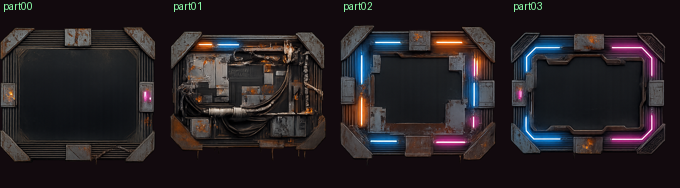
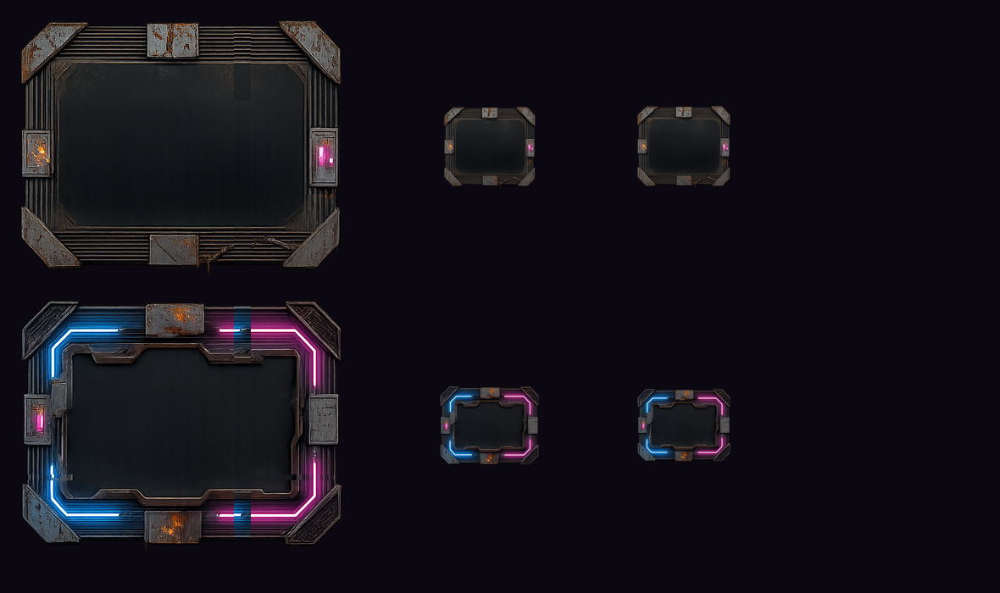
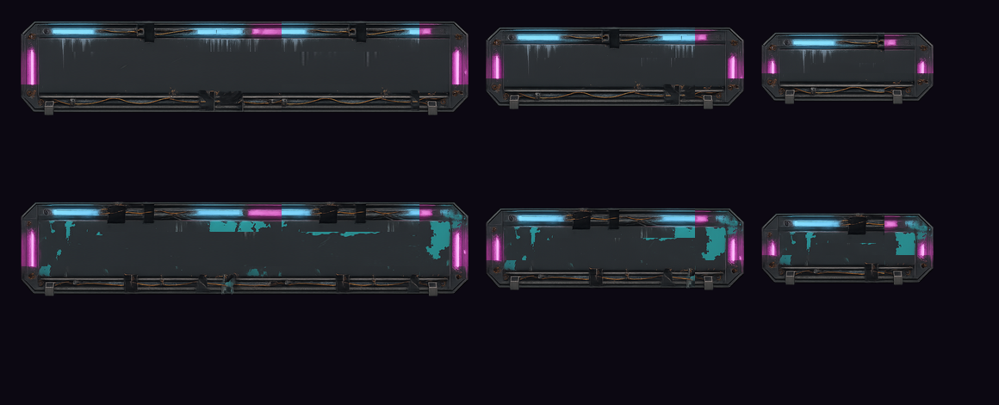

殭屍防禦 · UI · 第一批
賽博龐克貧民窟風格的面板框與按鈕。三次生成共 $0.60，第一次作廢。尚未寫進 Assets/。



| 項目 | 面板框 v2 | 按鈕 |
|---|---|---|
| 去背 | 52.5% 透明 | 37.2% 透明 |
| 邊緣出血 | 0 像素 | 0 像素 |
| 四周留白 | 左125 右294 上52 下55 | 左4 右12 上121 下160 |
| 不含文字 | 通過 | 通過 |
| 中央可放內容 | 2/4 完全空白 | 兩個都空白 |
| 九宮格可用尺寸 | 面板尺寸可，按鈕尺寸不可 | 三種尺寸皆可 |
面板框的角落構件佔了整張的約 30%（≈108px）。橫向按鈕高度只有 96px——上下邊框加起來就比按鈕本身還高，九宮格在數學上無解，只能整張等比縮成一個小方框。這是素材造型的限制，不是參數能調的，Unity 的九宮格也一樣。
已把這條寫進 zl_style_ui.txt：扁長型元件要先講死長寬比與「角落構件最多佔高度四分之一」。
| 批次 | 結果 | 金額 |
|---|---|---|
| 面板框 v1（6 元件） | 作廢 4 個元件出血被切 | $0.20 |
| 面板框 v2（4 元件） | 採用 2 個 1 備用、1 作廢 | $0.20 |
| 按鈕（2 元件） | 全部採用 | $0.20 |
| 小計 | $0.60 |
等你 OK 才寫進 Assets/ · 下一批：UI 圖示 27 個（$0.40）